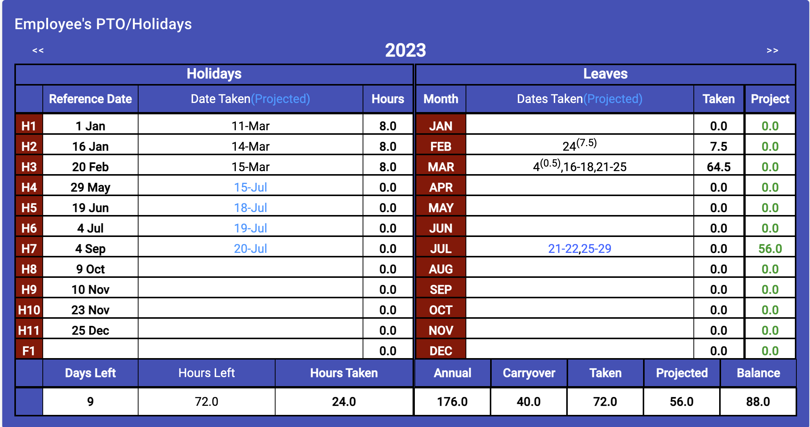
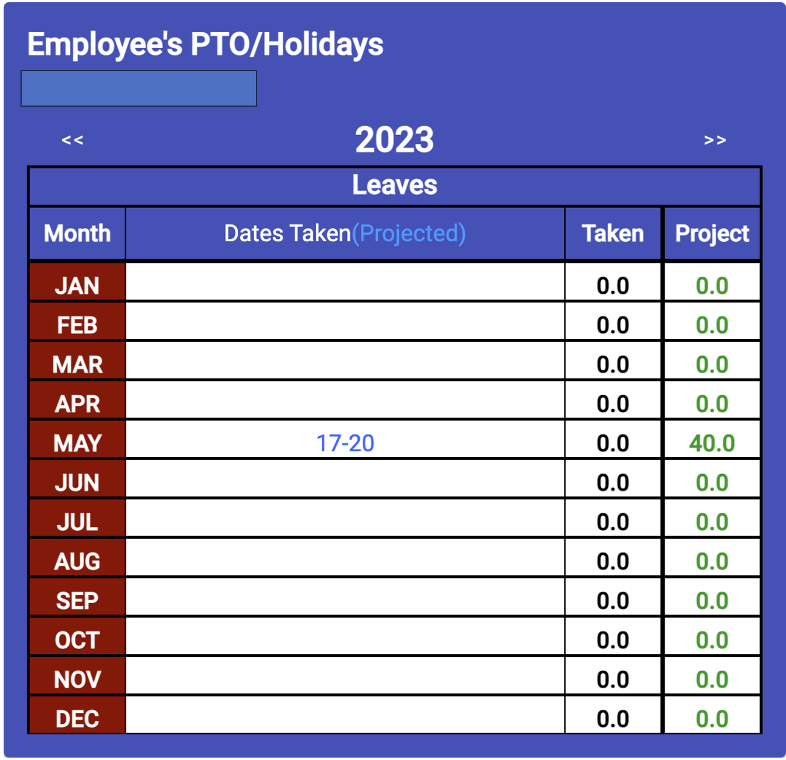

Employee Holidays and Leaves
For Companies with Leave and Holidays

For Companies with Leave only

The Employee’s PTO/Holiday report shows all the actual and/or approved
holidays and leaves to allow the employee to plan and provide a projection
of time off to their respective supervisors. Since some companies provide
only vacation time to their employees, the display is based on the company
defining their paid holidays, if none are assigned, only the leave portion
of the display shown.
- Holiday Display Portion - This display shows the holidays
designated by a company for the employee.
- They are defined in the Team's Data Section (Covered Later) and are
coded and sortable.
-
The display provides the holiday's code, the date for this holiday
within the displayed year, the date the holiday was actually taken by
the employee or the date projected to be taken, and the last column
shows the number of hours taken/used.
- Company policy dictates the standard number of hours for each
holiday (application assumes 8 hours) and whether or not partial
holidays can be taken and combined. Partial holidays are shown as a
date with the number of hours taken attached.
-
Holidays taken are displayed in black lettering and projected holidays
are shown in a blue shade.
-
Holidays are filled into the display in the date order with partial
holidays combined (up to 8 hours) to show a complete holiday taken.
-
Leaves Display - This display shows all the other types of time
off and employee uses during the year, grouped by month.
-
Paid-Time-Off (PTO) or vacation time is displayed in the same way as
holidays with black lettering for actual dates and a blue shade for
projected.
-
All other leaves use a reverse coloring scheme used in the employee
calendar, so if the leave is shown on the calendar as black lettering
with a yellow background, this display will show yellow lettering on
a black background.
-
The "Taken" and "Projected" columns on the right are to show the
amount of taken and projected PTO/Vacation time the employee has
taken or scheduled for that month. The application is written to
assume that other types of leave don't count against the employee's
vacation total.
-
Summary Section - The summary at the bottom of the display
provides a ready reference for the number of holidays left and the
amount of PTO/Vacation time the employee has remaining/unscheduled.
(This portion of the display will only be shown if leave balances
are provided to the application by the scheduler/site leadership, so
that a balance can be determined.)
-
The display is again broken down to Holidays and PTO/Vacation
sections (left and right). The holiday section is based on actual
holiday time taken, so the totals show the number of holidays not
taken yet, the number of hours available to be taken to the end of
the year, and the number of hours taken so far. The PTO/Vacation
section shows the number of hours carried over from the previous
year, the number of hours projected for the calendar year, the
number of hours taken and the number of hours projected. The
balance is simply a calculation of the hours available minus the
hours taken/projected or (annual PTO hours + carried forward) –
(taken + projected)
Employee Schedule/Calendar
Employee Profile Editor